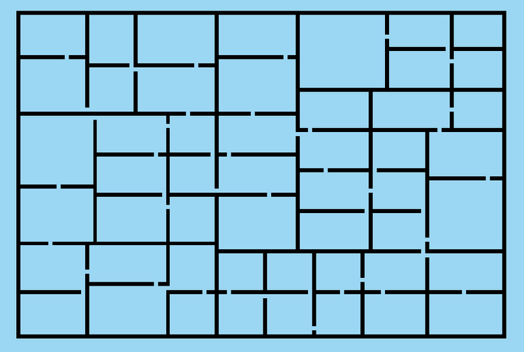
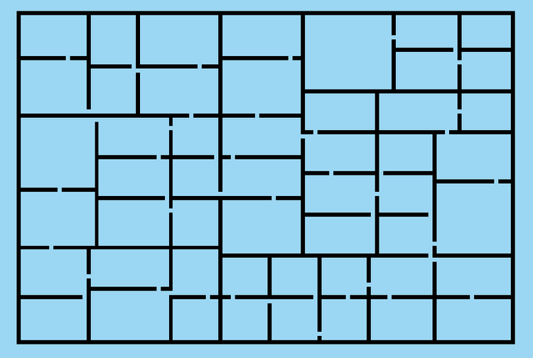

University Dissertation Artifact
PCG Dungeon Generator
Platform: PC
Engine: Unity
Development Time: 6 Months
Role: Solo Developer
Tools: C#, Unity
 

Project Overview
For my university dissertation, I developed a PC-based artifact focused on procedural content generation (PCG) methods for dungeon generation. This project explored multiple PCG algorithms, analysing their strengths and limitations through an interactive application.
Gameplay Mechanics
The project demonstrates six commonly used PCG methods: Cellular Automata, Binary Space Partitioning, Perlin Noise, Recursive Division, Drunkard Walk, and Recursive Backtracking. Users can adjust dungeon parameters such as size, room count, and corridor configurations to explore each algorithm’s behaviour.
Key Responsibilities & Contributions
- Designed and implemented PCG algorithms
- Developed visual debugging tools
- Conducted academic research and testing
- Optimised dungeon readability and flow